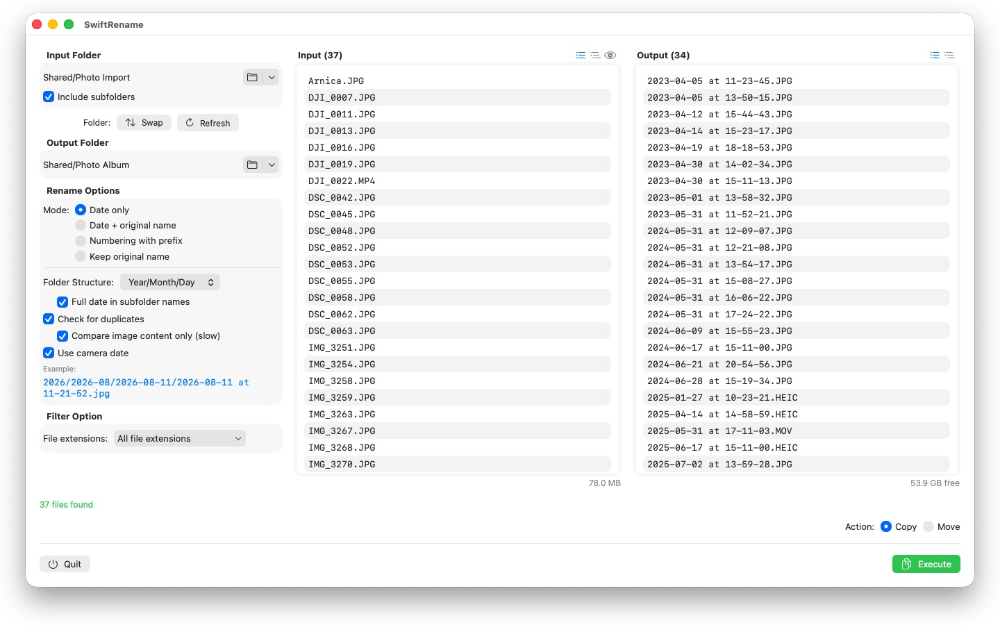
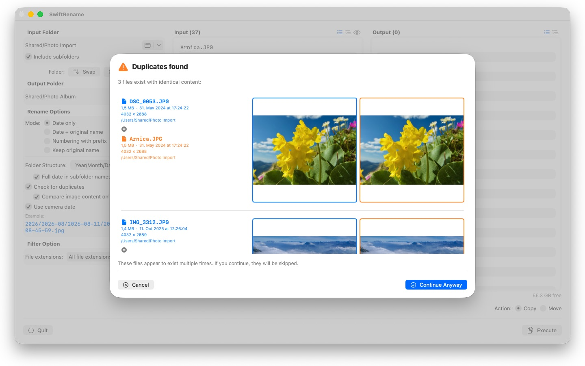

Rename hundreds of photos and files in one go — by camera date, numbered, or sorted into year and month folders. Duplicates are found and skipped automatically.



SwiftRename is a powerful tool for renaming, copying, and moving files in batches on your Mac. Pick a folder, choose how the new names should look, check the live preview — and run.
24 languages: Deutsch · English · Español · Français · Italiano · Nederlands · Português · Svenska · Norsk · Suomi · Polski · Čeština · Hrvatski · Magyar · Română · Türkçe · Русский · Українська · فارسی · ไทย · 日本語 · 한국어 · 简体中文 · 繁體中文
RENAME MODES
- Date only: name files by their date (e.g. 2024-01-15 at 14-30-00)
- Date + original name: prepend the date and keep the original name
- Numbering with prefix: sequential numbering with your own prefix (e.g. Trip_0001)
- Keep original name: leave names untouched and only sort files into folders
FOLDER STRUCTURE
Sort files automatically into folders by year, month, or day — with the full date in every subfolder name if you prefer (e.g. 2026/2026-02/2026-02-20). Files spanning several decades get decade folders on top. Or choose "Preserve" to mirror the source folder's subfolder hierarchy into the destination.
CAMERA DATE
Photos and videos are named after the moment they were actually taken: SwiftRename reads the camera date (EXIF) — from RAW formats of all major camera makers (Canon, Nikon, Sony, Fujifilm, and many more) as well as HEIC, JPEG, PNG, TIFF, and common video formats. If a file has no camera date, its creation date is used instead.
DUPLICATE DETECTION
Duplicates are detected by file size and content — independent of the creation date, so the same photo with a different timestamp cannot slip through. An optional image comparison even finds photos that were re-saved by other apps. Thumbnail previews let you compare both files side by side; duplicates are skipped automatically.
MORE FEATURES
- Copy or move with one click — including renaming in place within the same folder
- Quick access to recently used input and output folders
- Include subfolders; view file lists flat or as a folder tree
- Filter file extensions with multi-select
- Live preview of the new names before anything is touched
- Undo and redo for entire operations (Cmd+Z)
- Progress display with filename and percentage — cancel at any time
- Free disk space is checked before the operation starts
- Drag & drop folders straight from the Finder
Everything stays on your Mac. No network connections, no accounts, no data collection.
- Requires macOS 12 or later
- 24 languages
- Support: SwiftAppsBavaria@gmx.net
More Apps
sCollect
Organize music, movies, audiobooks, ebooks, and other collections in a media library.
sCollectPlay
The player for the media library: play music, movies, audiobooks, and podcasts simply from a folder, an iTunes XML file, or an sCollect library — the files’ tags stay untouched.
sName2Date
Write the date from the file name into photos, movies, and audio recordings as the capture date — so that a file like IMG_20240115_103000.jpg is sorted correctly in any photo manager.
sName2Date Lite
The edition for one file per run: write the date from the file name into a photo, a movie, or an audio recording as the capture date, set it by hand, put the name into ISO notation, and undo everything with ⌘Z — the same capabilities as sName2Date, just without entire folders.
sVectorLift
Open, view, and save old vector clip art as SVG — CorelDRAW, Windows Metafile, and CGM.
sCollectPlay Lite
The lean edition of sCollectPlay: simply open a folder, an iTunes XML file, or an sCollect library and play music, movies, audiobooks, and podcasts from it — with playlists, audio and subtitle tracks, slow motion, and frame-by-frame stepping. One source per session; the column browser, custom playlists, and recently used sources are reserved for the full version.
sBikeBridge
Analyze bike rides without uploading them to a portal: import FIT files from any bike computer that records in this format, plus GPX and TCX. Rides are kept in a dedicated library on the Mac — with map, power and heart rate, photos, and notes; the import detects duplicates. Stats by year or month and filters by distance, elevation gain, and duration make rides comparable. The map is also available offline if desired.